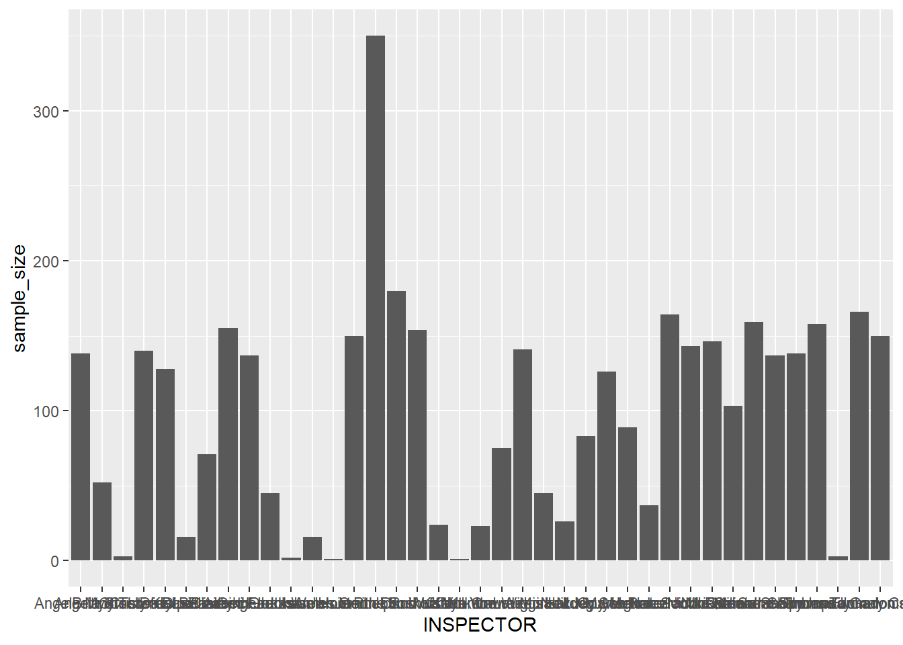
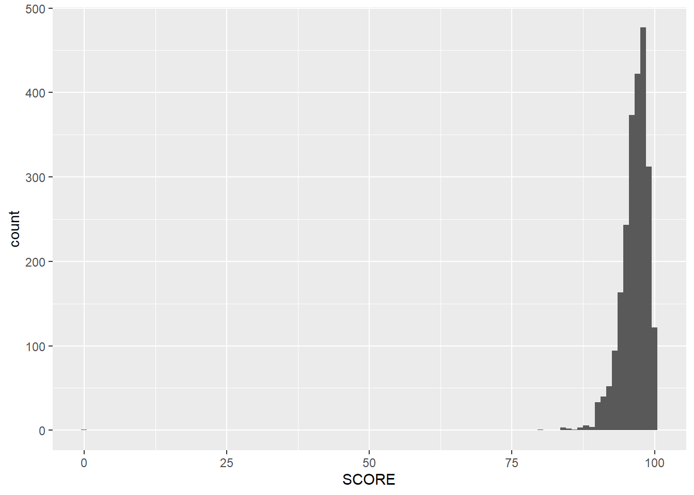

── Attaching core tidyverse packages ──────────────────────── tidyverse 2.0.0 ──
✔ dplyr 1.1.4 ✔ readr 2.1.5
✔ forcats 1.0.0 ✔ stringr 1.5.1
✔ ggplot2 3.5.1 ✔ tibble 3.2.1
✔ lubridate 1.9.3 ✔ tidyr 1.3.1
✔ purrr 1.0.2
── Conflicts ────────────────────────────────────────── tidyverse_conflicts() ──
✖ dplyr::filter() masks stats::filter()
✖ dplyr::lag() masks stats::lag()
ℹ Use the conflicted package (<http://conflicted.r-lib.org/>) to force all conflicts to become errors
library(lubridate)
data =read_csv(here::here("restaurant_inspections.csv"))
Rows: 3875 Columns: 12
── Column specification ────────────────────────────────────────────────────────
Delimiter: ","
chr (8): HSISID, DESCRIPTION, TYPE, INSPECTOR, NAME, RESTAURANTOPENDATE, CI...
dbl (3): OBJECTID, SCORE, PERMITID
dttm (1): DATE_
ℹ Use `spec()` to retrieve the full column specification for this data.
ℹ Specify the column types or set `show_col_types = FALSE` to quiet this message.
data = data |>mutate(DATE_ =as.Date(DATE_)) |>mutate(DATE_ =format(DATE_, "%Y")) average_scores_by_year = data |>group_by(DATE_) |>summarize(mean_score =mean(SCORE)) |>ungroup()print(average_scores_by_year, n =1000)
When comparing the year that restaurants opened with their average inspection score, there is no clear trend in age vs score. The average inspection score in 2017 was 97.000 while the average inspection score in 2022 was 97.4, these are so similar that there is no clear trend in the data. The inspection scores did decline after 2017 and were at their lowest in 2020 but then they increased again. I assume that maybe data from 2020 was lowest because of the impacts of COVID and maybe low sample sizes.
data = data |>mutate(CITY =str_to_upper(CITY)) |>mutate(CITY =recode(CITY,"HOLLY SPRINGS"="HOLLY SPRINGS","HOLLY SPRING"="HOLLY SPRINGS","FUQUAY VARINA"="FUQUAY VARINA","FUQUAY-VARINA"="FUQUAY VARINA", "MORRISVILLE"="MORRISVILLE", "MORRISVILE"="MORRISVILLE")) average_scores_by_city = data |>group_by(CITY) |>summarize(mean_score =mean(SCORE)) |>ungroup()print(average_scores_by_city, n=1000)
# A tibble: 20 × 2
CITY mean_score
<chr> <dbl>
1 ANGIER 94.5
2 APEX 97.6
3 CARY 97.6
4 CLAYTON 96.1
5 FUQUAY VARINA 97.3
6 GARNER 96.3
7 HOLLY SPRINGS 98.4
8 KNIGHTDALE 96.2
9 MORRISVILLE 96.8
10 NEW HILL 99.8
11 NORTH CAROLINA 97
12 RALEIGH 97.1
13 RESEARCH TRIANGLE PARK 98.5
14 ROLESVILLE 97.1
15 RTP 99
16 WAKE FOREST 97.3
17 WENDELL 95.5
18 WILLOW SPRING 96.5
19 ZEBULON 94.9
20 <NA> 94.2
When looking at the average inspection scores for each city, we see that there is not much of a difference between them. They all range from about 94-100, so there are no cities that are strong outliers and very different from the others.
average_scores_by_inspector <- data |>group_by(INSPECTOR) |>summarize(mean_score =mean(SCORE)) |>ungroup()print(average_scores_by_inspector, n=1000)
# A tibble: 39 × 2
INSPECTOR mean_score
<chr> <dbl>
1 Angela Myers 96.9
2 Angela Stocks 96.7
3 Brittny Thomas 98
4 Christy Klaus 96.3
5 Cristofer LeClair 97.7
6 Daryl Beasley 95.8
7 David Adcock 97.7
8 Dipatrimarki Farkas 97.8
9 Elizabeth Jackson 96.6
10 Ginger Johnson 97.6
11 Greta Welch 98.5
12 Jackson Hooton 96.1
13 James Smith 99
14 Jamie Phelps 98.2
15 Jason Dunn 94.9
16 Joanne Rutkofske 96.3
17 John Wulffert 98.4
18 Joshua Volkan 97.1
19 Kaitlyn Yow 98.5
20 Karla Crowder 95.5
21 Kendra Wiggins 96.1
22 Laura McNeill 97.5
23 Lauren Harden 94.7
24 Lisa McCoy 96.0
25 Loc Nguyen 97.6
26 Lucy Schrum 94.7
27 Maria Powell 97.0
28 Meghan Scott 94.3
29 Melodee Johnson 97.7
30 Naterra McQueen 96.9
31 Nicole Millard 98.1
32 Nikia Lawrence 97.0
33 Patricia Sabby 97.1
34 Samatha Sparano 96.9
35 Sarah Thompson 97.8
36 Shannon Flynn 97.0
37 Thomas Jumalon 89
38 Ursula Gadomski 97.7
39 Zachary Carter 98.1
Similar to the last question, I grouped by the mean inspection scores for each inspector to see if certain inspectors have significantly higher or lower scores than others. When looking at all of the inspectors scores, they are generally very similar to one another, ranging from again 94-97. However, one inspector, Thomas Jumalon has a significantly lower average score of 89.00000 when compared to the others. My assumption is that he was the inspector who got the outlier score of 0 which dragged down his averages.
average_scores_by_inspector <- data |>group_by(INSPECTOR) |>summarize(mean_score =mean(SCORE),sample_size =n() ) |>ungroup()print(average_scores_by_inspector, n=1000)
# A tibble: 39 × 3
INSPECTOR mean_score sample_size
<chr> <dbl> <int>
1 Angela Myers 96.9 138
2 Angela Stocks 96.7 52
3 Brittny Thomas 98 3
4 Christy Klaus 96.3 140
5 Cristofer LeClair 97.7 128
6 Daryl Beasley 95.8 16
7 David Adcock 97.7 71
8 Dipatrimarki Farkas 97.8 155
9 Elizabeth Jackson 96.6 137
10 Ginger Johnson 97.6 45
11 Greta Welch 98.5 2
12 Jackson Hooton 96.1 16
13 James Smith 99 1
14 Jamie Phelps 98.2 150
15 Jason Dunn 94.9 350
16 Joanne Rutkofske 96.3 180
17 John Wulffert 98.4 154
18 Joshua Volkan 97.1 24
19 Kaitlyn Yow 98.5 1
20 Karla Crowder 95.5 23
21 Kendra Wiggins 96.1 75
22 Laura McNeill 97.5 141
23 Lauren Harden 94.7 45
24 Lisa McCoy 96.0 26
25 Loc Nguyen 97.6 83
26 Lucy Schrum 94.7 126
27 Maria Powell 97.0 89
28 Meghan Scott 94.3 37
29 Melodee Johnson 97.7 164
30 Naterra McQueen 96.9 143
31 Nicole Millard 98.1 146
32 Nikia Lawrence 97.0 103
33 Patricia Sabby 97.1 159
34 Samatha Sparano 96.9 137
35 Sarah Thompson 97.8 138
36 Shannon Flynn 97.0 158
37 Thomas Jumalon 89 3
38 Ursula Gadomski 97.7 166
39 Zachary Carter 98.1 150
ggplot(average_scores_by_inspector, aes(x = INSPECTOR, y = sample_size)) +geom_col()

After analyzing the sample sizes of each inspector, I believe that it is safe to say that there is definitely some sample size bias that could be affecting the data. The range in sample sizes is so drastic (1-350) that I believe some of the data should be considered more reliable than others. For instance, Thomas Jumalon, whose data stands out as being lower than the others, only has 3 samples that were used to calculate the mean. Therefore, one bad score could drastically sway his data, causing an inaccurately low mean score. Because of Jason Dunn’s sample size being 350 samples, I think we should take the mean of his samples to be a lot more accurate and representative of the data. I attempted to make a bar graph to represent this data and while it is very good in showing how drastically different the sample sizes are, it is hard to distinguish between the different inspectors and their mean values.
average_scores_by_facility = data |>group_by(FACILITYTYPE) |>summarize(mean_score =mean(SCORE)) |>ungroup()print(average_scores_by_facility)
# A tibble: 11 × 2
FACILITYTYPE mean_score
<chr> <dbl>
1 Elderly Nutrition Sites (catered) 99.2
2 Food Stand 97.7
3 Institutional Food Service 96.9
4 Limited Food Service 98.5
5 Meat Market 98.0
6 Mobile Food Units 98.1
7 Private School Lunchrooms 98.5
8 Public School Lunchrooms 99.2
9 Pushcarts 98.8
10 Restaurant 96.7
11 <NA> 94.2
After looking at the data, it is clear that restaurants did not get higher scores than other facilities, in fact, facilities had the lowest mean score among all of the facilities. The restaurants had a mean score of 96.7, while the highest score was the Elderly Nutrition Sites which had a mean score of 99.3. This makes sense based on the different levels of standard among restaurants and a place that is focused on nutrition and health.
restaurants_data = data |>filter(FACILITYTYPE =="Restaurant")ggplot(restaurants_data, aes(x=SCORE)) +geom_histogram(binwidth=1)

labs(title="Distribution of Inspection Scores" ,y ="Amount" ,x ="Inspection Score")
data = data |>filter(FACILITYTYPE =="Restaurant") average_scores_by_year = data |>group_by(DATE_) |>summarize(mean_score =mean(SCORE)) |>ungroup()print(average_scores_by_year, n =1000)
# A tibble: 18 × 2
CITY mean_score
<chr> <dbl>
1 ANGIER 94.5
2 APEX 97.1
3 CARY 97.3
4 CLAYTON 93
5 FUQUAY VARINA 96.9
6 GARNER 95.8
7 HOLLY SPRINGS 98.0
8 KNIGHTDALE 95.1
9 MORRISVILLE 96.7
10 NEW HILL 100
11 RALEIGH 96.6
12 RESEARCH TRIANGLE PARK 98.5
13 ROLESVILLE 96.0
14 RTP 99
15 WAKE FOREST 96.8
16 WENDELL 94.6
17 WILLOW SPRING 94.5
18 ZEBULON 93.6
When grouping the mean scores of restaurants for different cities, there actually are more differences than when we were previously looking at all facilities. In fact, Clayton has a drastically lower score when just analyzing restaurants and the scores overall appear lower for the restaurants than when comparing all facilities.
# A tibble: 38 × 2
INSPECTOR mean_score
<chr> <dbl>
1 Angela Myers 96.7
2 Angela Stocks 96.2
3 Brittny Thomas 98
4 Christy Klaus 95.9
5 Cristofer LeClair 97.1
6 Daryl Beasley 95.4
7 David Adcock 95.9
8 Dipatrimarki Farkas 97.7
9 Elizabeth Jackson 95.7
10 Ginger Johnson 97.6
11 Greta Welch 98.5
12 Jackson Hooton 96.3
13 James Smith 99
14 Jamie Phelps 97.9
15 Jason Dunn 97.1
16 Joanne Rutkofske 94.8
17 John Wulffert 98.1
18 Joshua Volkan 97.0
19 Karla Crowder 94.4
20 Kendra Wiggins 95.9
21 Laura McNeill 96.9
22 Lauren Harden 94.1
23 Lisa McCoy 96.1
24 Loc Nguyen 97.6
25 Lucy Schrum 93.8
26 Maria Powell 96.7
27 Meghan Scott 93.3
28 Melodee Johnson 97.3
29 Naterra McQueen 96.2
30 Nicole Millard 97.6
31 Nikia Lawrence 96.5
32 Patricia Sabby 96.8
33 Samatha Sparano 96.8
34 Sarah Thompson 97.5
35 Shannon Flynn 96.6
36 Thomas Jumalon 88
37 Ursula Gadomski 97.2
38 Zachary Carter 97.8
The trend in inspector data is similar to before, most inspectors have generally the same trends in inspection scores around 94-100 but once again, Thomas Jumalon has a drastically lower score than everyone else.
# A tibble: 38 × 3
INSPECTOR mean_score sample_size
<chr> <dbl> <int>
1 Angela Myers 96.7 104
2 Angela Stocks 96.2 36
3 Brittny Thomas 98 3
4 Christy Klaus 95.9 100
5 Cristofer LeClair 97.1 72
6 Daryl Beasley 95.4 12
7 David Adcock 95.9 8
8 Dipatrimarki Farkas 97.7 118
9 Elizabeth Jackson 95.7 80
10 Ginger Johnson 97.6 35
11 Greta Welch 98.5 2
12 Jackson Hooton 96.3 12
13 James Smith 99 1
14 Jamie Phelps 97.9 108
15 Jason Dunn 97.1 4
16 Joanne Rutkofske 94.8 92
17 John Wulffert 98.1 111
18 Joshua Volkan 97.0 22
19 Karla Crowder 94.4 14
20 Kendra Wiggins 95.9 61
21 Laura McNeill 96.9 92
22 Lauren Harden 94.1 34
23 Lisa McCoy 96.1 18
24 Loc Nguyen 97.6 74
25 Lucy Schrum 93.8 86
26 Maria Powell 96.7 60
27 Meghan Scott 93.3 29
28 Melodee Johnson 97.3 122
29 Naterra McQueen 96.2 81
30 Nicole Millard 97.6 48
31 Nikia Lawrence 96.5 64
32 Patricia Sabby 96.8 116
33 Samatha Sparano 96.8 117
34 Sarah Thompson 97.5 98
35 Shannon Flynn 96.6 112
36 Thomas Jumalon 88 2
37 Ursula Gadomski 97.2 104
38 Zachary Carter 97.8 100
Again, I believe that the sample sizes can definitely impact and skew the data. Once again, there is a very large range in the sample sizes which can seriously cause problems when trying to compare the data because one highly low number can drag down the average significantly.